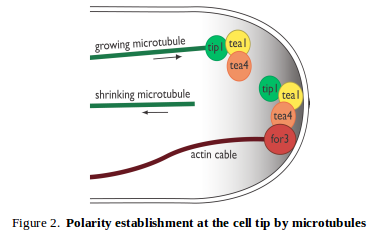

|
Actin underlies many fundamental cell behaviors such as cytokinesis, cell migration, asymmetric cell division and morphogenesis. Fission yeast make three major actin structures: the cytokinetic ring involved in cytokinesis, actin cables involved in polarized cell growth and membrane transport, and actin patches involved in endocytosis.
Formins - Actin rings and cables
The Chang Lab (and while Fred was a postdoc with Nurse and Drubin labs) made important early contributions in the 1990s in the discovery of formins, which are now recognized to be key actin nucleators for many of the diverse actin structures in eukaryotic cells. Fred identified Cdc12 as a new "pioneer" gene required for actin ring assembly for cytokinesis in S. pombe (Chang et al., JCS, 1996; JCB 1997). Concurrently, similar proteins were identified with seeming diverse functions in other eukaryotes, such as Bni1 in budding yeast, Diaphanous in Drosophila, and mDias in human cells. At the time, Cdc12 provided the clearest example showing that these proteins are mediate assembly of actin structures in vivo. cdc12-ts mutants do not form actin filaments at the division site at restrictive temperature and lose pre-existing rings rapidly upon temperature shift; further, experiments with permeabilized cells suggest that actin nucleation activity at the division site was dependent on the activity of the Cdc12 protein. Identification of a second formin For3 showed that it is needed for actin cable assembly. Subsequent work on Bni1 by several other groups showed that these proteins behave as actin nucleators in vitro. We are continuing to work on formins in the context of their regulation and function in vivo.
The formin Cdc12 is responsible for nucleating actin for assembly and maintenance of the contractile ring (see Cytokinesis section).

The formin For3 is at the core of a machine that spools out actin cables (Feierbach and Chang, 2001; Martin and Chang, 2006). Actin cables are dynamic bundles of short actin filaments assembled at the cell tips; these structures contribute to cell polarization, in part, by acting as tracks for transport of vesicles to the cell tips. In a proposed mechanism, the formin is activated at the cell tip, transiently nucleates a filament and then is carried inward into the cytoplasm while riding the end of the actin filament.
Endocytosis
Endocytosis in fission yeast involves a burst of actin polymerization at the endocytic site; these actin structures have been called historically "actin patches." This actin is nucleated by Arp2/3 complex (Pelham and Chang, 2001). Actin may contribute force to drive the membrane of the endocytic pit inwards against high turgor pressure (Basu and Chang, 2014). Characterization of a new actin patch regulatory factor Dip1 demonstrates that it is a new class of Arp2/3 activator that allows Arp2/3 to nucleate in the absence of preassembled actin seeds (Basu and Chang, 2012; see also Wagner et al., 2013).
|